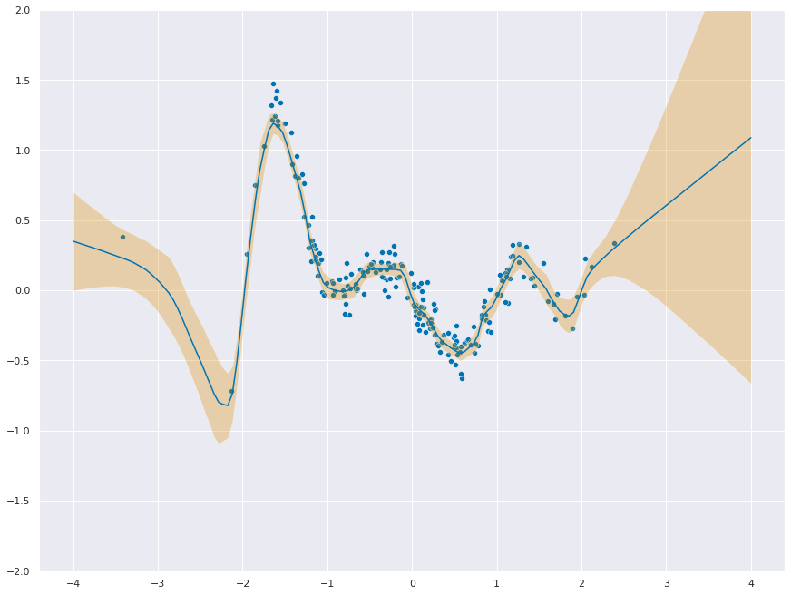
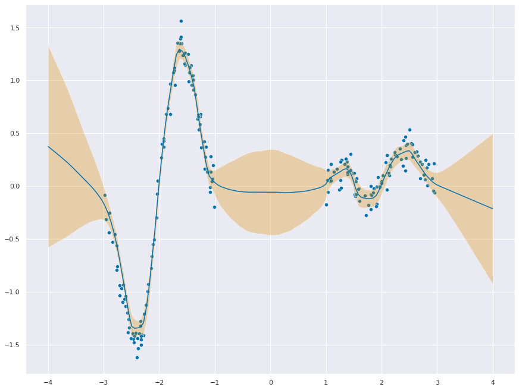
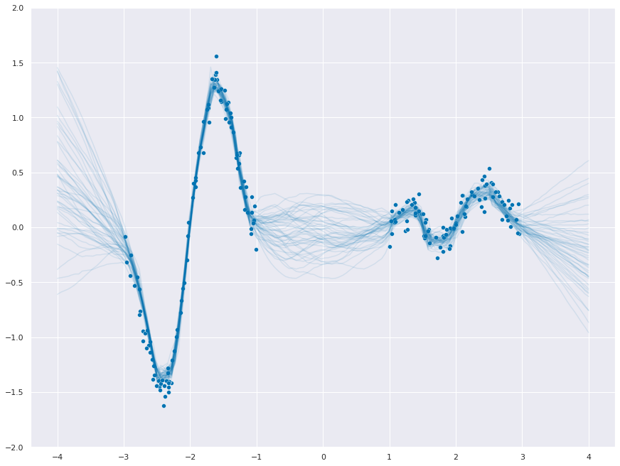
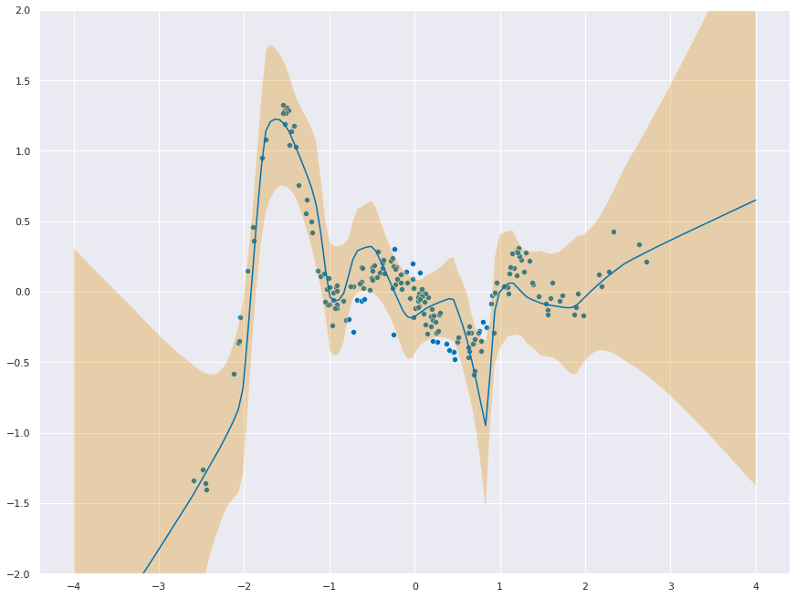

import matplotlib.pyplot as plt
import numpy as np
import seaborn as sns
import torch
from torch.nn.functional import softplus
rc = {
"figure.constrained_layout.use": True,
"axes.titlesize": 20,
"figure.figsize": (12, 9),
}
sns.set_theme(style="darkgrid", palette="colorblind", rc=rc)
Marginalized Neural Network (aka Neural Linear Model)
Based on the tweet by Andrew Jesson. Below is from the notebook shared by Andrew.
Thanks to David Holzmüller, Kevin Patrick Murphy, and Jason Hartford for correctly identifying this approach as the Neural Linear Model (NLM). The NLM seems to have first appeared as the Marginalized Neural Network in Marginalized Neural Network Mixtures for Large-Scale Regression and then in Scalable Bayesian Optimization Using Deep Neural Networks. Benchmarking the Neural Linear Model for Regression compares the NLM to mean field variational inference and Monte Carlo dropout Bayesian Neural Networks and concludes that methods such as NLM which do exact inference over a subset of parameters may perform better than methods that do variational inference over all parameters.
class Simulated(torch.utils.data.Dataset):
def __init__(self, n=1000, sigma=0.1, in_between=False, outliers_percentage=None):
if in_between:
mask = torch.distributions.Bernoulli(0.5).sample(torch.Size([n, 1]))
self.data = (-2 * torch.rand(n, 1).float() - 1) * mask \
+ (2 * torch.rand(n, 1).float() + 1) * (1. - mask)
else:
self.data = torch.randn(n, 1).float()
self.targets = f(self.data, sigma).float()
#Adding outliers
if (outliers_percentage):
num_outliers = int((outliers_percentage/100) * n)
outliers = torch.distributions.Uniform(
torch.tensor([-5.0]), torch.tensor([5.0])).sample(torch.Size([num_outliers]))
mask = torch.randint_like(outliers, high=n).long()
#print(outliers)
self.targets[mask] = outliers.float()
def __len__(self):
return len(self.targets)
def __getitem__(self, idx):
return self.data[idx], self.targets[idx]
def f(x, sigma=0.1):
w = torch.tensor([-0.6667, -0.6012, -1.0172, -0.7687, 1.4680, -0.1678])
fx = 0
for i in range(len(w)):
fx += w[i] * (x**i)
fx *= np.sin(np.pi * x)
fx *= np.exp(-0.5 * (x**2)) / np.sqrt(2 * np.pi)
return (
fx.squeeze(-1)
+ torch.randn(
len(x),
)
* sigma
)num_features = 100
n_train = 200
dr = 0.05
model = torch.nn.Sequential(
torch.nn.Linear(1, num_features),
torch.nn.ReLU(),
torch.nn.Dropout(dr),
torch.nn.Linear(num_features, num_features),
torch.nn.ReLU(),
torch.nn.Dropout(dr),
torch.nn.Linear(num_features, num_features),
torch.nn.ReLU(),
torch.nn.Dropout(dr),
torch.nn.Linear(num_features, 1),
)
log_sigma = torch.nn.Parameter(-2 * torch.ones(1))
ds = Simulated(n=n_train)
dl = torch.utils.data.DataLoader(
ds,
batch_size=32,
shuffle=True,
drop_last=True
)
optimizer = torch.optim.AdamW(
[
{
"params": model.parameters(),
"lr": 1e-3,
"weight_decay": (1 - dr)
/ (2 * len(ds)),
},
{
"params": log_sigma,
"lr": 1e-2,
"weight_decay": 1e-6,
},
]
)model.train()
for epoch in range(500):
train_loss = []
for batch in dl:
x, y = batch
mu = model(x)
dist = torch.distributions.Normal(mu, softplus(log_sigma))
loss = -dist.log_prob(y.unsqueeze(-1)).mean()
optimizer.zero_grad()
loss.backward()
optimizer.step()
train_loss.append(loss.item())
if epoch % 20 == 0:
print(f"Epoch {epoch}, loss: {np.mean(train_loss):.02f}")Epoch 0, loss: 2.83
Epoch 20, loss: 0.10
Epoch 40, loss: -0.08
Epoch 60, loss: -0.28
Epoch 80, loss: -0.36
Epoch 100, loss: -0.38
Epoch 120, loss: -0.48
Epoch 140, loss: -0.67
Epoch 160, loss: -0.67
Epoch 180, loss: -0.63
Epoch 200, loss: -0.73
Epoch 220, loss: -0.67
Epoch 240, loss: -0.70
Epoch 260, loss: -0.76
Epoch 280, loss: -0.71
Epoch 300, loss: -0.58
Epoch 320, loss: -0.84
Epoch 340, loss: -0.75
Epoch 360, loss: -0.79
Epoch 380, loss: -0.83
Epoch 400, loss: -0.79
Epoch 420, loss: -0.71
Epoch 440, loss: -0.62
Epoch 460, loss: -0.74
Epoch 480, loss: -0.89Computing uncertainty
Need to compute \(\phi(X_{\text{test}})\) and \(\phi(X_{\text{train}})\)
x_test = torch.linspace(-4, 4, 150).unsqueeze(-1)
model.eval()
with torch.no_grad():
mu_pred = model(x_test)
phi_test = model[:-1](x_test)
phi_train = model[:-1](ds.data)
print(phi_train.shape, phi_test.shape)torch.Size([200, 100]) torch.Size([150, 100])Now we calculate, \(\sigma^{-2}\phi(X_{\text{train}})^{⊤} \phi(X_{\text{train}}) + \mathbf{I}\), which has shape num_features x num_features. This is different from a standard GP with size n_train x n_train.
I = torch.eye(num_features)
A = phi_train.T @ phi_train / torch.square(softplus(log_sigma).detach()) + INow we solve for \(\phi(x)^{\top}\left(\sigma^{-2}\phi(X_{\text{train}})^{⊤} \phi(X_{\text{train}}) + \mathbf{I}\right)^{-1}\phi(x)\). We can use the identity \(\phi(x)^{\top}\left(\sigma^{-2}\phi(X_{\text{train}})^{⊤} \phi(X_{\text{train}}) + \mathbf{I}\right)^{-1}\phi(x) = ||L^{-1}\phi(x)||^2_2\), with \(L\) the Cholesky decomposition of \(\left(\sigma^{-2}\phi(X_{\text{train}})^{⊤} \phi(X_{\text{train}}) + \mathbf{I}\right)^{-1}\). Thank you Andreas Kirsch.
As pointed out by Yarin Gal, this is in fact Bayesian Linear regression in penultimate layer feature space. Which is indeed, “sort of a deep kernel GP.”
L = torch.linalg.cholesky(A)
print(L.shape)
v = torch.linalg.solve_triangular(L, phi_test.T, upper=False)
cov = v.T @ v + 1e-5 * torch.eye(len(phi_test))
f_stddev = torch.sqrt(torch.diag(cov))torch.Size([100, 100])_ = plt.figure(figsize=(12,9))
_ = sns.scatterplot(x=ds.data.ravel(), y=ds.targets.ravel())
_ = sns.lineplot(x=x_test.ravel(), y=mu_pred.ravel())
_ = plt.fill_between(
x=x_test.ravel(),
y1=mu_pred.ravel() + 1.96 * f_stddev,
y2=mu_pred.ravel() - 1.96 * f_stddev,
alpha=0.3,
)
_ = plt.ylim(-2, 2)
Pretty Samples
dist = torch.distributions.MultivariateNormal(loc=mu_pred.ravel(), covariance_matrix=cov)
f_samples = dist.sample(torch.Size([20]))_ = sns.scatterplot(x=ds.data.ravel(), y=ds.targets.ravel())
for func in f_samples:
_ = sns.lineplot(x=x_test.ravel(), y=func.to("cpu"), color="C0", alpha=0.1)
_ = plt.ylim(-2, 2)In-between uncertainty
Great comment from Yingzhen Li on in-between uncertainty! Let’s take a look.
num_features = 100
n_train = 200
dr = 0.05
model = torch.nn.Sequential(
torch.nn.Linear(1, num_features),
torch.nn.ReLU(),
torch.nn.Dropout(dr),
torch.nn.Linear(num_features, num_features),
torch.nn.ReLU(),
torch.nn.Dropout(dr),
torch.nn.Linear(num_features, num_features),
torch.nn.ReLU(),
torch.nn.Dropout(dr),
torch.nn.Linear(num_features, 1),
)
log_sigma = torch.nn.Parameter(-2 * torch.ones(1))
ds = Simulated(n=n_train, in_between=True)
dl = torch.utils.data.DataLoader(
ds,
batch_size=32,
shuffle=True,
drop_last=True
)
optimizer = torch.optim.AdamW(
[
{
"params": model.parameters(),
"lr": 1e-3,
"weight_decay": (1 - dr)
/ (2 * len(ds)),
},
{
"params": log_sigma,
"lr": 1e-2,
"weight_decay": 1e-6,
},
]
)model.train()
for epoch in range(500):
train_loss = []
for batch in dl:
x, y = batch
mu = model(x)
dist = torch.distributions.Normal(mu, softplus(log_sigma))
loss = -dist.log_prob(y.unsqueeze(-1)).mean()
optimizer.zero_grad()
loss.backward()
optimizer.step()
train_loss.append(loss.item())
if epoch % 20 == 0:
print(f"Epoch {epoch}, loss: {np.mean(train_loss):.02f}")Epoch 0, loss: 13.52
Epoch 20, loss: 0.87
Epoch 40, loss: 0.26
Epoch 60, loss: -0.04
Epoch 80, loss: -0.14
Epoch 100, loss: -0.13
Epoch 120, loss: -0.25
Epoch 140, loss: -0.03
Epoch 160, loss: -0.42
Epoch 180, loss: -0.35
Epoch 200, loss: -0.41
Epoch 220, loss: -0.47
Epoch 240, loss: -0.36
Epoch 260, loss: -0.41
Epoch 280, loss: -0.44
Epoch 300, loss: -0.54
Epoch 320, loss: -0.48
Epoch 340, loss: -0.55
Epoch 360, loss: -0.55
Epoch 380, loss: -0.57
Epoch 400, loss: -0.46
Epoch 420, loss: -0.52
Epoch 440, loss: -0.44
Epoch 460, loss: -0.60
Epoch 480, loss: -0.52x_test = torch.linspace(-4, 4, 150).unsqueeze(-1)
model.eval()
with torch.no_grad():
mu_pred = model(x_test)
phi_test = model[:-1](x_test)
phi_train = model[:-1](ds.data)
I = torch.eye(num_features)
A = phi_train.T @ phi_train / torch.square(softplus(log_sigma).detach()) + I
L = torch.linalg.cholesky(A)
v = torch.linalg.solve_triangular(L, phi_test.T, upper=False)
cov = v.T @ v + 1e-5 * torch.eye(len(phi_test))
f_stddev = torch.sqrt(torch.diag(cov))_ = plt.figure(figsize=(12,9))
_ = sns.scatterplot(x=ds.data.ravel(), y=ds.targets.ravel())
_ = sns.lineplot(x=x_test.ravel(), y=mu_pred.ravel())
_ = plt.fill_between(
x=x_test.ravel(),
y1=mu_pred.ravel() + 1.96 * f_stddev,
y2=mu_pred.ravel() - 1.96 * f_stddev,
alpha=0.3,
)
dist = torch.distributions.MultivariateNormal(loc=mu_pred.ravel(), covariance_matrix=cov)
f_samples = dist.sample(torch.Size([50]))_ = sns.scatterplot(x=ds.data.ravel(), y=ds.targets.ravel())
for func in f_samples:
_ = sns.lineplot(x=x_test.ravel(), y=func.to("cpu"), color="C0", alpha=0.1)
_ = plt.ylim(-2, 2)
With Outliers
Adding 5% outliers : The loss increases from -0.89 to 1.27 .
num_features = 100
n_train = 200
dr = 0.05
model = torch.nn.Sequential(
torch.nn.Linear(1, num_features),
torch.nn.ReLU(),
torch.nn.Dropout(dr),
torch.nn.Linear(num_features, num_features),
torch.nn.ReLU(),
torch.nn.Dropout(dr),
torch.nn.Linear(num_features, num_features),
torch.nn.ReLU(),
torch.nn.Dropout(dr),
torch.nn.Linear(num_features, 1),
)
log_sigma = torch.nn.Parameter(-2 * torch.ones(1))
ds = Simulated(n=n_train, outliers_percentage=5)
dl = torch.utils.data.DataLoader(
ds,
batch_size=32,
shuffle=True,
drop_last=True
)
optimizer = torch.optim.AdamW(
[
{
"params": model.parameters(),
"lr": 1e-3,
"weight_decay": (1 - dr)
/ (2 * len(ds)),
},
{
"params": log_sigma,
"lr": 1e-2,
"weight_decay": 1e-6,
},
]
)
model.train()
for epoch in range(500):
train_loss = []
for batch in dl:
x, y = batch
mu = model(x)
dist = torch.distributions.Normal(mu, softplus(log_sigma))
loss = -dist.log_prob(y.unsqueeze(-1)).mean()
optimizer.zero_grad()
loss.backward()
optimizer.step()
train_loss.append(loss.item())
if epoch % 20 == 0:
print(f"Epoch {epoch}, loss: {np.mean(train_loss):.02f}")
x_test = torch.linspace(-4, 4, 150).unsqueeze(-1)
model.eval()
with torch.no_grad():
mu_pred = model(x_test)
phi_test = model[:-1](x_test)
phi_train = model[:-1](ds.data)
print(phi_train.shape, phi_test.shape)
I = torch.eye(num_features)
A = phi_train.T @ phi_train / torch.square(softplus(log_sigma).detach()) + I
L = torch.linalg.cholesky(A)
print(L.shape)
v = torch.linalg.solve_triangular(L, phi_test.T, upper=False)
cov = v.T @ v + 1e-5 * torch.eye(len(phi_test))
f_stddev = torch.sqrt(torch.diag(cov))
_ = plt.figure(figsize=(12,9))
_ = sns.scatterplot(x=ds.data.ravel(), y=ds.targets.ravel())
_ = sns.lineplot(x=x_test.ravel(), y=mu_pred.ravel())
_ = plt.fill_between(
x=x_test.ravel(),
y1=mu_pred.ravel() + 1.96 * f_stddev,
y2=mu_pred.ravel() - 1.96 * f_stddev,
alpha=0.3,
)
_ = plt.ylim(-2, 2)Epoch 0, loss: 25.33
Epoch 20, loss: 5.53
Epoch 40, loss: 3.51
Epoch 60, loss: 2.53
Epoch 80, loss: 2.00
Epoch 100, loss: 1.35
Epoch 120, loss: 1.61
Epoch 140, loss: 1.49
Epoch 160, loss: 1.43
Epoch 180, loss: 1.39
Epoch 200, loss: 1.33
Epoch 220, loss: 1.34
Epoch 240, loss: 1.23
Epoch 260, loss: 1.27
Epoch 280, loss: 1.21
Epoch 300, loss: 1.32
Epoch 320, loss: 1.29
Epoch 340, loss: 1.27
Epoch 360, loss: 1.29
Epoch 380, loss: 1.28
Epoch 400, loss: 1.29
Epoch 420, loss: 1.28
Epoch 440, loss: 1.22
Epoch 460, loss: 1.17
Epoch 480, loss: 1.27
torch.Size([200, 100]) torch.Size([150, 100])
torch.Size([100, 100])